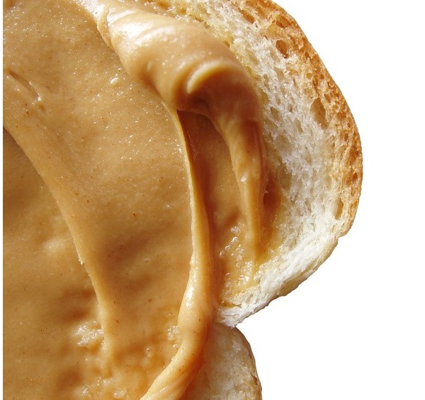

Can You Smell That Now?
How Peanut Butter Can Serve as an Early Detection for Alzheimer's
Michelle Zhang
Fall 2013
 Everyone has different staples for the pantry, but peanut butter may soon be added to everyone’s list. Why? According to a small pilot study by graduate student Jennifer Stamps, Dr. Linda Bartoshuk and Dr. Kenneth Heilman at the University of Florida, peanut butter can actually serve as a detector for Alzheimer’s disease. This cheap, quick and convenient method of detection is surely worth closer consideration.
There are many current warning signs of Alzheimer’s that can prompt a doctor’s visit, but most of these encompass subjective measures of productivity and sensation. One such example from the Alzheimer’s Association is difficulty completing familiar tasks and decreased or poor judgement. However, these symptoms can be overlooked by an unobservant patient or patient in denial.
By comparison, the peanut butter test is much more objective, and can prove to be more effective for a patient. The reason peanut butter is the scent of choice is that it is a pure odorant, whereas many other scents have two components. This makes peanut butter ideal for testing for Alzheimer’s because it specifically deals with the olfactory sense. Stamps’ experiment showed that patients with Alzheimer’s have severely impaired olfactory senses in the left nostril. Patients closed their eyes and blocked one nostril as clinicians moved 14 grams of peanut butter toward to the patient one centimeter at a time until the odor could be detected. The right nostril was able to detect the smell on average 10 centimeters before than the left.This test is especially useful because many cognitive impairments may share similar symptoms, but only patients with Alzheimer's have impaired olfactory sense in the left nostril. Such a phenomenon was not observed in the control group of healthy individuals or groups of individuals suffering from other cognitive impairments.
The early detection of Alzheimer’s can open a wider range of treatment options and clinical trials while also allowing patients to make a more comprehensive plan of their own care and legal and financial matters. Benefits such as these can come from doing something as simple as buying a bottle of Jif’s from the store.
We are far from a cure to Alzheimer’s, but
thanks to the innovative research at the University of Florida using
something as common as peanut butter, patients may soon be able to have
a simpler and more decisive detection test for Alzheimer’s. With the
discovery of different and decisive methods of detection, we can
improve treatment and support for patients and their families.
About the Author
Michelle Zhang is a sophomore and an intended MCB major with an emphasis in Neurobiology. She currently is an undergraduate research assistant in the Dan Lab, and hopes to pursue a career in research.